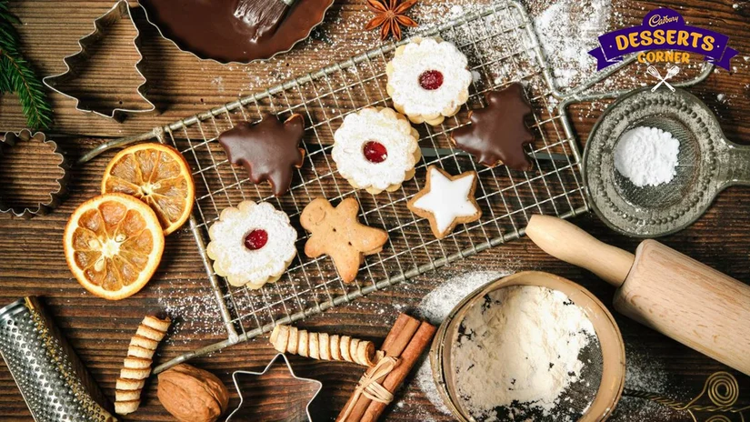
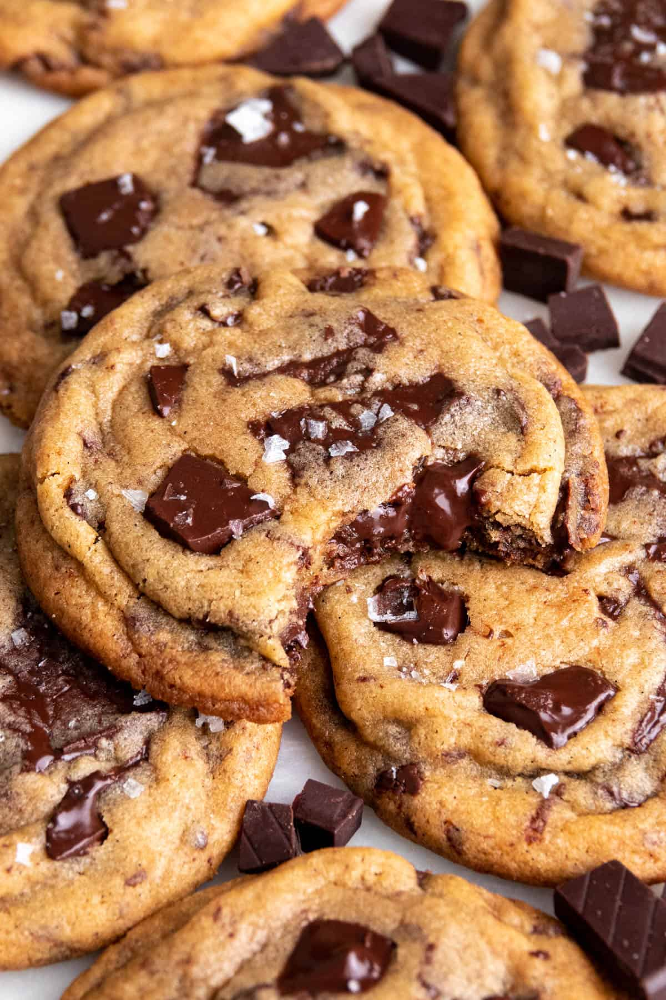

Baking started as a simple hobby, but it has become so much more to me. When I was little, I started baking because I loved watching recipes on TikTok and wanted to try making them myself. As a student, life can sometimes get stressful with studying, assignments, and exams. Baking gives me a chance to take a break, relax, and focus on something creative. I love trying new recipes and seeing how simple ingredients can turn into something delicious. For me, baking is not just about making sweet treats; it is also a way to express myself, reduce stress, and enjoy the little things in life.


My favourite thing to bake is chocolate soufflé. I love its rich chocolate flavour and its soft, fluffy texture. Even though it can be a little challenging to make, it is worth it when it comes out of the oven perfectly risen and delicious!